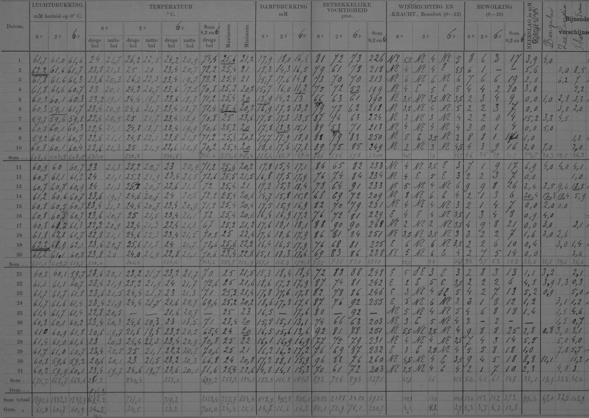

Built a hybrid AI pipeline that transcribes 19th-century handwritten weather tables with 97% precision, 10x faster than manual transcription. Generated 39K+ synthetic training samples to fine-tune OCR models, unlocking climate data trapped in Caribbean archives.

Handwritten weather observations from the Caribbean, containing up to 36 columns of daily meteorological data.
The Hidden Climate Archive
Millions of handwritten weather observations from the 19th and early 20th centuries are currently trapped in paper archives. These records — carefully logged by meteorologists over a century ago — contain invaluable data for understanding long-term climate patterns. Yet they're at risk of permanent loss from deterioration, fire, or flooding, and remain completely inaccessible for modern computer analysis.
For climate scientists, this data is a goldmine. It could help:
- Trace long-term climate change processes
- Attribute observed changes to specific drivers
- Validate and improve existing climate models
- Fill critical gaps in historical data, especially for underrepresented regions like the Global South
But there's a bottleneck: manual transcription is painfully slow. An experienced transcriber takes about 45 minutes per sheet. With thousands of sheets in archives like the Royal Netherlands Meteorological Institute (KNMI), this would require decades of work.
This is where AI comes in.
The Challenge: Why Standard OCR Fails
Historical weather records present a perfect storm of challenges for automated transcription:
1. Handwritten Text
- Individual handwriting styles vary wildly between observers
- Historical scripts look different from modern writing
- Ink quality varies — some entries are bold and clear, others barely visible
2. Complex Table Structures
- Dense tables with up to 37 rows and 36 columns
- Weak or absent borders between cells
- Multiple measurement times per day (8am, 2pm, 6pm)
- Summary rows for 10-day totals and monthly averages
3. Document Degradation
- Faded ink, stains, and tears
- Variations in paper quality and imaging conditions
Previous attempts at automation have had limited success:
- Standard OCR models: ~50-90% accuracy (far below the 98% gold standard needed)
- Commercial solutions like AWS Textract and Google Vision: 88-90% accuracy
- Custom systems like MeteoSaver: 74% median accuracy, but require extensive manual setup
Our Solution: A Hybrid AI Pipeline
I developed a novel approach that combines the strengths of multimodal large language models (MLLMs) with traditional OCR, creating a system that's both accurate and scalable.
The Pipeline
Figure: Hybrid AI pipeline combining MLLMs and fine-tuned OCR for historical table transcription.
Step 1: Table Detection & Preprocessing
First, I locate the table in each scanned image. Historical documents often lack clear borders, so I:
- Deskew and binarize the images
- Search for reference words (like "DATUM" in the top-left corner)
- Crop the table region based on predefined dimensions for each document type
This way I can find the exact location of the table in the image with high accuracy and little effort.
Step 2: Multimodal Transcription with Gemini
I used Google's Gemini 2.5 Flash model — a multimodal LLM that can understand both images and text — to extract data directly from the table images.
I improved the transcription by guiding the model with:
- Structured prompts in Dutch (matching the language of the records)
- JSON schema definitions to enforce consistent output format
- Dual extraction strategy: transcribing both row-wise and column-wise
This gave me two independent transcriptions of the same table, which I could later cross-reference.
Step 3: Quality Assurance Through Science
Since these are weather records, I can use physical relationships between meteorological variables to validate the transcriptions.
For example:
- Relative humidity should relate to temperature and vapor pressure through the psychrometric equation
- Vapor pressure can be calculated from dry-bulb and wet-bulb temperatures using the Carrier equation
If the transcribed values don't satisfy these physical laws within a small tolerance, I flag them as potentially incorrect.
Step 4: Training Data Generation
Following this validation process, I use the MLLM transcriptions to automatically create training data for a specialized OCR model.
I:
- Used MeteoSaver's cell detection to identify individual cells in the table
- Matched these cells with the validated MLLM transcriptions
- Created synthetic training pairs: (cell image, transcribed text)
This gave me 39,636 training samples from 151 historical tables — without any manual labeling!
Step 5: Fine-Tuning OCR Models
I then fine-tuned a pre-trained OCR model (Tesseract-based) on this synthetic data. The baseline model started with only 19% accuracy on my test set. After fine-tuning I was able to improve this to 81% accuracy on unseen data.
The Results: How Good Is AI at This?
MLLM Transcription Performance
| Method | Precision | Inclusion Rate | Time per Table |
|---|---|---|---|
| Row-wise extraction | 90% | 78% | ~4 minutes |
| Column-wise extraction | 85% | 78% | ~4 minutes |
| After cross-referencing | 94% | 74% | - |
| After physical validation | 97% | 59% | - |
Key insight: With validation, I achieved 97% precision—rivaling human transcription accuracy (95-98%). The trade-off: I transcribed fewer cells (59% inclusion rate), as strict filtering removed uncertain entries.
The model struggled most with:
- Empty cells (often shifted neighboring values into them)
- Wind direction columns (old-fashioned handwriting for compass directions)
- The bottom summary rows (monthly totals and averages)
OCR Fine-Tuning Performance
| Model | Curaçao Precision | Sint Eustatius Precision |
|---|---|---|
| Baseline OCR | 19% | 48% |
| Fine-tuned (all data) | 81% | 67% |
| Fine-tuned (Curaçao only) | 50% | 12% |
The pattern: Fine-tuning dramatically improved accuracy on familiar handwriting styles, but struggled to generalize to new styles—highlighting the importance of diverse training data.
Speed Comparison
| Method | Time per Table | Cost (Full Dataset) |
|---|---|---|
| Manual transcription | 45 minutes | Thousands of dollars |
| MLLM (Gemini API) | 4 minutes | ~$256 |
| Fine-tuned OCR | 2 minutes | Free (after setup) |
At the free API rate limit (250 requests/day), transcribing 2027 tables would take ~16 days. With a paid plan, this drops to ~2 days.
Environmental impact: Transcribing the full dataset would use about 0.975 kWh of energy—roughly equivalent to charging a smartphone 10 times.
Lessons Learned & Challenges
What Worked Well
- MLLMs are surprisingly good at understanding table structure and handwriting simultaneously
- Physical validation using meteorological relationships dramatically improved precision
- Synthetic training data generation enabled OCR fine-tuning without manual labeling
- The hybrid approach combines the strengths of both MLLMs and specialized OCR
Remaining challenges
- Cell detection errors propagate: A single merged or split cell can misalign an entire row of training labels
- Generalization is tough: Models trained on one observer's handwriting don't always transfer to others
- Empty cells are problematic: The model often shifted values into empty spaces
- Training data quality: I estimated ~22% of generated training samples had errors
Possible paths for improvement
- Better prompt engineering: Provide examples of correctly transcribed tables to guide the model
- Enhanced preprocessing: Alternating row colors might help the model distinguish between rows
- More rigorous validation: Add additional checks (daily sums, value ranges, temporal consistency)
- Human-in-the-loop: Use MLLMs to assist rather than replace human transcribers
- Self-hosted models: Explore open-source MLLMs for more control and lower costs
The Future of Data Rescue
This project showed that AI can achieve near-human accuracy in transcribing historical documents, but there's still room for improvement.
Next Steps
- Scale up: Apply the pipeline to the full KNMI archive (2000+ sheets)
- Improve generalization: Incorporate more diverse handwriting styles in training
- Automated correction: Use MLLMs to automatically fix errors in OCR output
- Open-source tools: Package the pipeline for use by other data rescue initiatives
Technical Appendix
Dataset
- Source: Royal Netherlands Meteorological Institute (KNMI)
- Locations: Curaçao, Sint Eustatius, Bonaire, Sint Maarten, Suriname
- Time period: Late 19th to early 20th century
- Format: High-resolution JPEG images (6000x4000px, 240 DPI)
- Table types: Handwritten, hand-drawn, and typewriter-filled tables
Models Used
- MLLM: Google Gemini 2.5 Flash
- OCR Baseline: Tesseract (cobecore_V9-405 model)
- Cell Detection: Adapted MeteoSaver algorithm
Code & Resources
The full dataset is available on the KNMI Data Platform.
Want to see the code, read the full scientific report, or discuss the project? Get in touch.